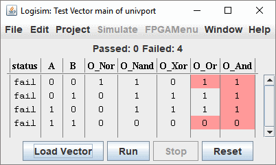

测试向量窗口
测试向量窗口与日志窗口的“表格”选项卡类似。可以从文件加载测试向量，Logisim 随后会对当前电路运行测试。与日志窗口一样，项目中只有一个测试向量窗口，表格会随项目窗口中正在仿真的电路而变化。但请注意，测试向量模块运行的是独立的电路仿真实例，因此不会干扰项目窗口中的仿真，也不受其影响。
作为示例，我们将测试下面的电路。该电路根据两个输入给出五个逻辑函数的结果。它包含一个错误，因为底部的与非门应为与门。

测试向量文件如下所示：
A B O_Nor O_Nand O_Xor O_Or O_And O_AB[2] 0 0 1 1 0 0 0 00 0 1 0 1 1 1 0 01 1 0 0 1 1 1 0 10 1 1 0 0 0 1 1 11
要运行测试，请选择菜单 | 仿真 |→| 测试向量 |，然后使用 加载向量 按钮。选择已准备好的向量文件后，仿真会立即执行，并显示一个包含结果的表格。

任何与期望不符的输出都会以红色标记。将鼠标悬停在红色框上可查看测试向量中期望的输出值。包含错误输出的行会排到窗口顶部。
文件格式很简单。可以使用日志模块（在文件输出选项卡中选择“包含标题行”）来入门，因为在大多数情况下，日志模块输出的格式与测试向量模块使用的格式相同。
交互式测试执行
测试向量窗口中的每一行都有两个按钮，可用于手动与各个测试交互：
-
“Show”按钮（第一列）：此按钮用于预览电路状态，而不检查输出。
- 组合测试（seq=0）：重置电路，设置输入值，并传播信号。只有被点击的行以绿色高亮显示，表明它已执行。
- 时序测试（seq>0）：重置电路，然后运行同一 set 中所有先前的时序步骤（从 seq 1 到目标步骤），在每个步骤之后进行传播。所有已执行的时序步骤都以绿色高亮显示，以显示执行路径。
-
“Set”按钮（第二列）：此按钮用于设置输入值，并可能执行测试。
- 组合测试（seq=0）：重置电路，应用测试输入，然后传播信号。只有被点击的行以绿色高亮显示，表明它已执行。
- 时序测试（seq>0）：不会重置电路，也不会运行任何其他测试。仅设置该步骤的输入值，然后传播信号。只有被点击的行会以绿色高亮显示。这样可以手动逐步执行序列，而无需重置或运行之前的步骤。
- 对于任一按钮，如果在仿真菜单中关闭自动传播，则不会传播序列中的最后一步（或组合测试中的唯一步骤），而是在设置输入引脚后停止。这样可以对该行的传播过程进行单步观察。
高亮行为：
- 当在组合测试中点击 Show 按钮时，只有该单行以绿色高亮显示。
- 当在时序测试中点击 Show 按钮时，所有时序步骤（seq > 0）直到目标步骤（含目标步骤）都会以绿色高亮显示。
- 当点击 Set 按钮时，只有被点击的行以绿色高亮显示，无论它是组合测试还是时序测试。
- 当加载新的向量文件或重置电路仿真器时，高亮显示会被清除。